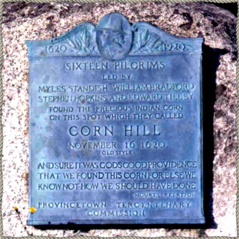
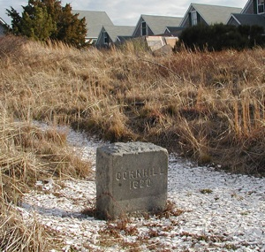

A Brief History of Corn Hill

In November 1620, the Mayflower first encountered land in the New World when they sailed into Provincetown Harbor. After a brief visit to what is now called PIlgrim Spring up near High Head in North Truro, the Pilgrims sailed down a bit farther and sent a party to explore at Corn Hill, so named because they found a cache of corn that had been buried there by the natives. The pilgrims helped themselves and planted the corn once they settled at Plymouth.
A plaque at the base of Corn Hill (of which there is a framed rubbing in cottage #10) commemorates the event :
1620: Pilgrims Land on Corn Hill

The actual landing spot on top of the hill is marked with a small monument, visible from the back bedroom window of Cottage #10:

1900: Corn Hill Cottages are Built
Corn Hill Cottages were built around 1900 as a seaside resort. The original six cottages did not have kitchen facilities. Renters went to the large building at the south end of the row of cottages for meals in a communal dining room. The workers had living quarters in the upper floors of the big house. Kitchens were added on the back of the cottages a few decades later.
Originally, there were two rows of cottages on the dune. On the fourth of July, 1937, an errant spark from the local fireworks started a fire that destroyed the lower row of cottages, which were never rebuilt. The six existing cottages were untouched.
1937: Fire Destroys Lower Row of Corn Hill Cottages
1982: Corn Hill Cottages Condominium Association Founded
Corn Hill Cottages was owned by a single owner until 1982, when the cottages were sold to individual owners. The Corn Hill Condominium Association was formed, including the owners of the six original small cottages, owners of portions of the big community house, and owners of four additional houses that had been erected near the cottages.